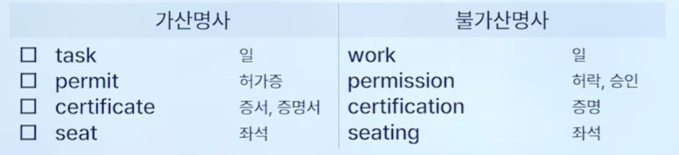
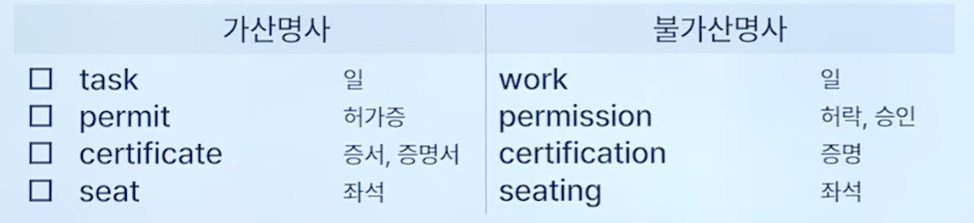
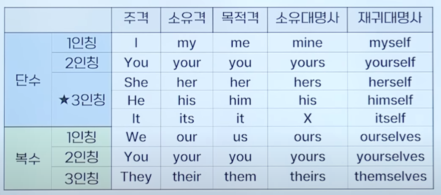
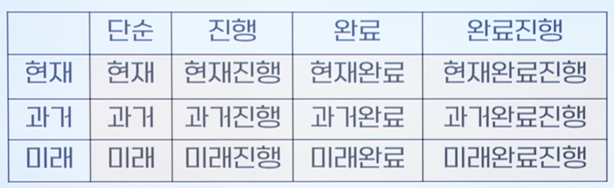
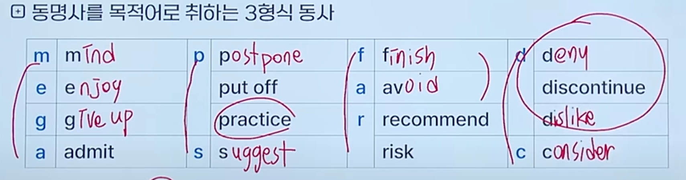
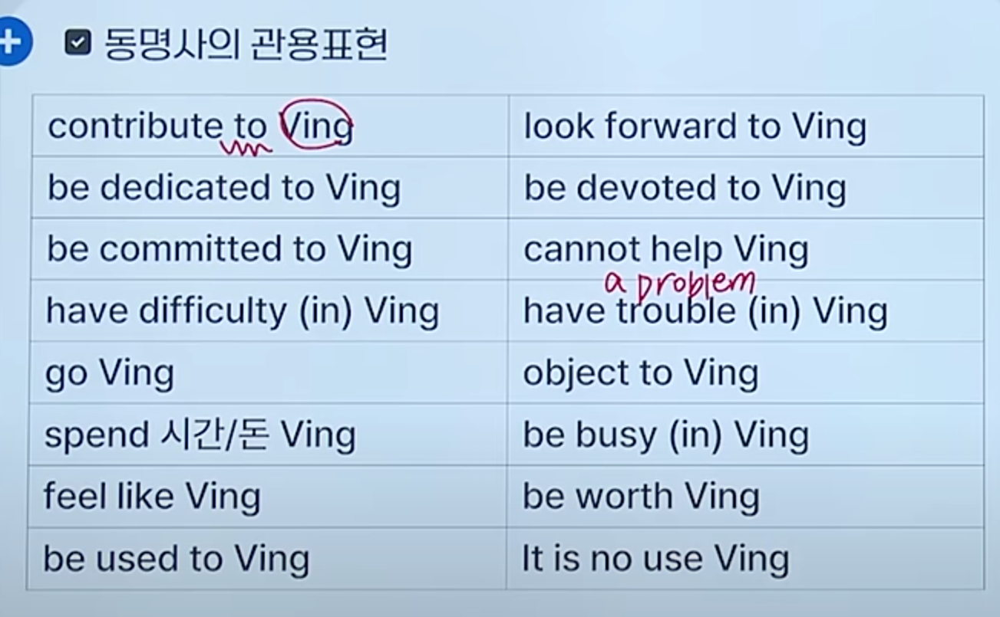

Toeic 문법
영어

명동형부
명사 / 대명사
- 기본 명사 생김새
- 명사 1초 공식 TOP 5
- 관사(a/an/the) + 명사 + 전치사
- 전치사 + 명사 + 전치사
- 관사/소유격 + (부사) + (형용사) + 명사
- 형용사(지시형용사, 수량형용사) + 명사
- 명사 + 명사
- 명사 자리
- 주어
- 타/목
- 전/목
- 보어
- 가산명사 vs. 불가산명사 > 관사 a/an는 가산 단수 명사 앞에만 쓸 수 있다. > the는 가산 단수 복수, 불가산 명사 앞에 쓸 수 있다.
- 불가산 명사: a/an, -s 안 붙음 information: 정보 advice: 조언 merchandise: 상품 access: 접근 assistance: 지원 equipment: 장비 luggage/ baggage: 수하물 stationery: 문구류 funding: 자금 제공 furniture: 가구 produce: 농산물 news: 소식 
- ~ing는 대부분 불가산 명사
- 불가산 명사: a/an, -s 안 붙음 information: 정보 advice: 조언 merchandise: 상품 access: 접근 assistance: 지원 equipment: 장비 luggage/ baggage: 수하물 stationery: 문구류 funding: 자금 제공 furniture: 가구 produce: 농산물 news: 소식 
- 사람명사 vs. 사물명사
- 사람명사: 가산 명사
- 사물명사: 가산/불가산 명사
- 특이 어미 명사: -al(proposal, arrival, approval), -ive(
initiative),
- 명사 1초 공식 TOP 5
- 기본 인칭대명사 표
- 소유격-소유대명사
- 소유격 뒤에만 명사가 올 수 있다.
- his: 소유격이면서 소유대명사 
- 목적격-재귀대명사
- 재귀대명사는 재귀용법, 강조용법(부사 자리)으로 사용 가능
- 지시대명사
- This, That + 단수동사/ These, Those + 복수동사
- Those who + 복수동사
- 부정대명사
- one vs another
- some vs any
- some: 긍정문(not이 없음), 권유나 제안을 나타내는 의문문
- any: 부정문, 의문문, 조건문, 어떤 ~라도
- 소유격-소유대명사
동사 (수, 태, 시제)
- S질량의 보존의 법칙: 단수 주어 + 단수 동사 / 복수 주어 + 복수 동사
- 고유명사(대문자)는 단수
- 주어 + 거품(부사 / 전치사구) + 동사
- 무조건 동사원형 자리
- 조동사(will, can, should, may) + 동사원형
- please + 동사원형
- 무조건 단수 동사
- 단수 명사
- 불가산 명사
- to 부정사구
- 동명사구
- that 절
- 기본 동사 보는 방법
- pp + be: 수동
- 나머지: 능동

형용사 / 부사
- 형용사 위치와 공식
- 주격 보어자리(s + 2v + sc), 2v: be, become, remain, seem, Stay
- 목적격 보어자리(s + 5v + o + oc), 5v: Keep, Find, Consider, Make
- 수량형용사 수일치
- each, every, another + 단수 명사
- many, (a) few, a number of, several + 복수명사
- a number of + 주어: 주어에 맞춘 동사
- the number of + 주어: the number of에 맞춘 동사(단수)
- much, little, a little, less + 불가산 명사
- a little(few) vs litte(few): a 가 붙으면 긍정, 아니면 부정
- all, some, most, a lot of + 복수 명사/ 불가산 명사
전접부
전치사 / 등위접속사 / 부사절 접속사
- 빈출 접속사
- at: 시각(at 7 a.m.,
at the end of this year), 정확한 지점 / 주소 - on:
몇 월 몇 일, 일, 접촉(on the table, on the wall, on the ceiling) - in: 연도, 월, 계절, 행정 구역, 3차원 공간
- until: (동사가) 지속성
- by: (동사가) 일회성
- during: 특정 기간 명사
- for: 숫자, 숙어, ~을 위해
- through: ~을 통해(관통해서), 수단 / 매개
- throughout: 장소, 시간
- between / among: 복수명사가 온다. between은 2개, among은 3개 이상
- since: 부사로도 쓸 수 있긴 함
- because of / due to /
owing to/on account of: ~때문에
- at: 시각(at 7 a.m.,
- 등위접속사
- Both A and B
- 복수 동사
- Either A or B
- Neither A nor B
- Not only A but also B
- B As well as A
- Not A but B
- B에 맞춘 동사
- Both A and B
- 부사절 접속사
- 조건: if, unless,
provided(that), as long as, in case (that), in event (that)
- 조건: if, unless,
명사절 접속사 / 형용사절 접속사
- if 미래내용: 현재동사
- 형용사절 접속사
- 소유격 + 완전한 문장
- 그 외 + 불완전한 문장
- , 다음에 that 안 씀
접속부사 / 전치사 접속사 부사
- notwithstanding: ~에도 불구하고
준동사
To부정사 / 동명사 / 분사
- To부정사: 명사, 형용사, 부사(~하기 위해서
so as to, in order to) 역할. 미래 지향적인 느낌 - 동명사: 명사 역할. 과거 지향적이고 부정적인 느낌


- 분사: 형용사 역할
- 자동사: ing